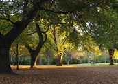
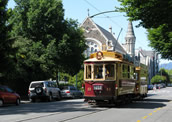

Christchurch
Canterbury is home to the South Island's largest city, Christchurch (population of over 350,000). Also known as the Garden City, Christchurch is exactly that - A city full of gardens, plentiful park areas and trees. Christchurch's architecture has a very English flavour to it.
The city is named after Oxford's Christ Church College, and is full of Gothic styled churches (made of grey and white stone). The Avon River winds it's way leisurely through the city, providing plenty of spots where you can relax under a weeping willow tree and watch the day drift by.
Hagley Park is situated near the city centre and stretches over an area of 161 hectares (400 acres). It is but a 10-minute stroll from the commercial centre of the city. The metropolitan centre is dominated by the Cathedral Square - a large, square cobblestone area with a cathedral adjacent to it. Christchurch is very popular for its Art festivals, street entertainers and food stalls from dozens of different countries.